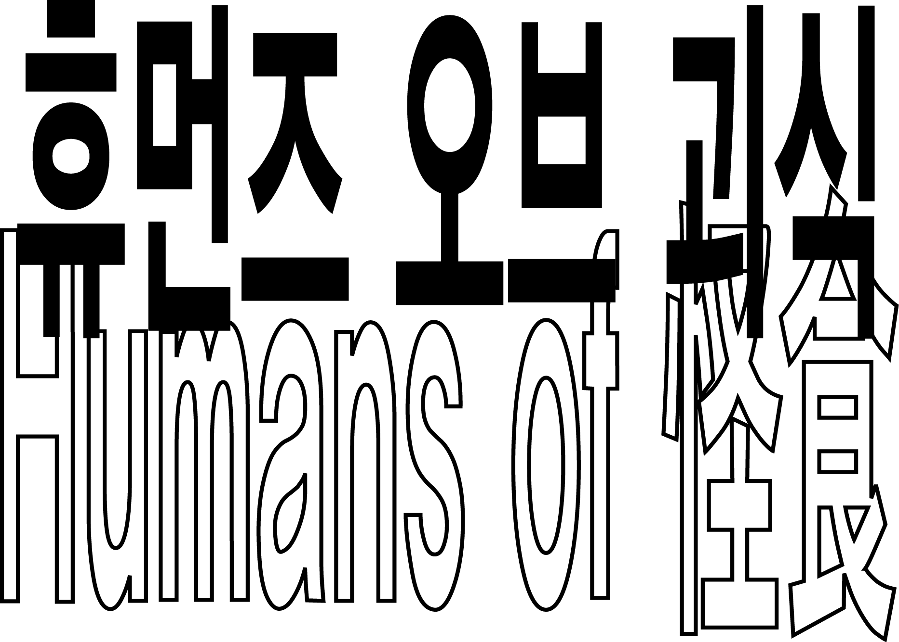
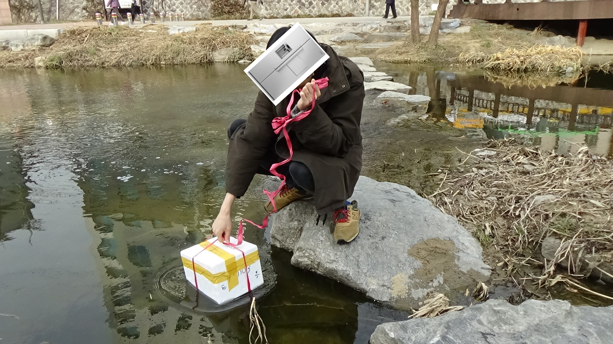
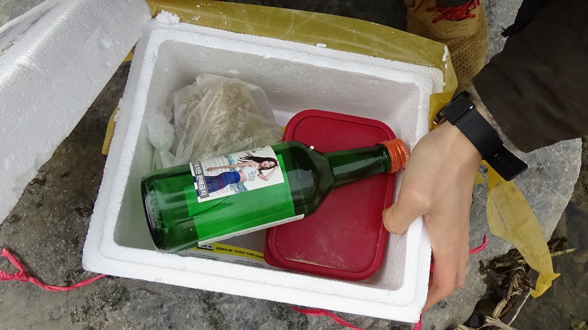
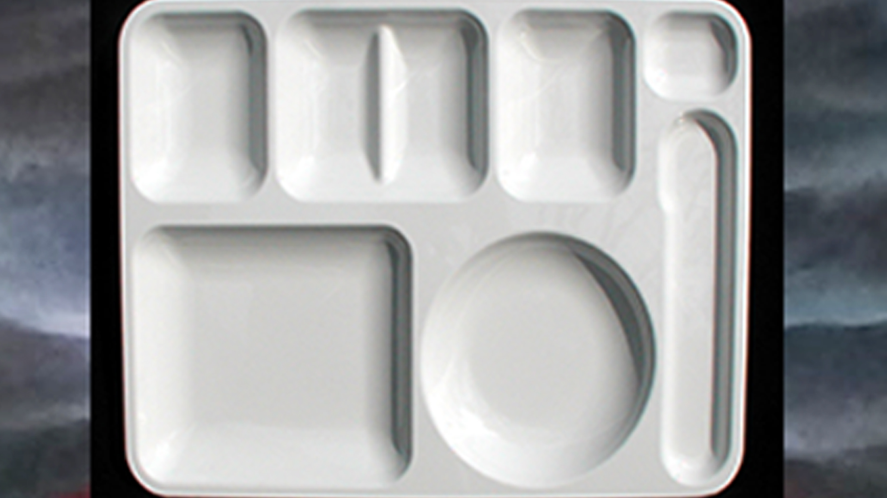
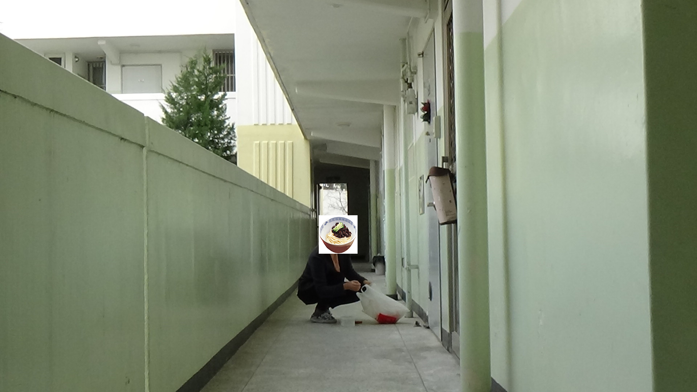

Cre하트나무체
경쾌한 모양의 폰~t
자본주의가 싫지만 후배 기강은 잡고 싶어하는 선배님! 근엄한 설교를 가장한 성추행을 피하고 싶다면 약국에서 RU-21을 찾아보세요.
Nokdu_party
*강감찬은 고려 전기의 다재다능한 애국자였읍니다.

죽었던 장군도 살아돌아온다는 지방자치 파티
위풍당당
강감찬 장군

4평짜리 게스트 하우스에서 들은 얘기들 - 관악구의 거지 청년들은 무얼 먹고 살까요?
"관악구 서림동에서 ‘잠만 자는 방’ 거주 중이에요. 개인 냉장고는 없고 층마다 공용 냉장고 썼었는데 작정하고 훔쳐가는 사람이 있더라구요. 몇 번 경찰도 불렀었는데 증거가 없어서 누군지 잡을 수가 없었어요."
나만의 냉장고1

“그때부터 열받아서 공용 냉장고 안 쓰고 동네 실개천에다가 물건들 묶어놓기 시작했어요. 사실 동네 개천을 유심히 들여다보는 사람이 없잖아요. 산책할 때 옆에 물 흐르면 기분 좋으니까 있는 거지. 그래서 새벽같이 일어나서 음료수 등등 노끈으로 묶어서 담궈놓고 와요.”
나만의 냉장고2

“계속 둥둥 떠서 돌덩이를 넣어놔야 해요.”
나만의 냉장고3
“저는 종교인입니다. 사실 군대 다닐 때부터 종교를 가지기로 마음을 먹었어요. 교회가 참 좋더라구요. 일요일에 들를 때마다 간식이니 밥이니 다 챙겨주시고.”
우리의 인연
“이렇게 당장 허기진 자부터 구제를 해주시는데 어찌 주 예수를 안믿을 수 있겠어요?”
우리의 인연
“제대하고 나서도 고민을 좀 하다가 계속 다니기로 했어요. 1년 365일을 7로 나누면 52주죠. 그럼 일요일이 52번 정도 온다는 건데, 그럼 1년에 52끼를 예수님께서 주시는 거잖아요. 그런 생각이 딱 드니까 하느님 나라에 안갈 수가 없더라구요.”
우리의 인연
“그래서 본격적으로 기독교인이 되기 전 견학을 가서 조리 시설이 구비되어 있는지를 다 살폈어요. 그러니까 보통 이 정도 (교회의) 사이즈면 얼만큼 (급식을) 주겠다 싶은 감이 생기더라구요.”
우리의 인연

“그렇게 해서 이곳 집사님 등등과 인연을 맺은 게 벌써 2년째예요. 이곳 사람들과 따로 봐야할 일이 생기면 주일 11시 예배 끝나고 급식실에서 보자구 하죠.”
우리의 인연
조재료씨, 22세

“3월이나 9월, 학기 초가 되면 다같이 모여서 음식을 시켜먹는 일이 많아지잖아요. 그럴 때면 저도 덩달아 바빠져요. 이 때 부지런히 돌아다니면서 모아두면 최소 두 달치 식재료는 확보할 수 있거든요. 과방이나 라운지 같은 곳들 잘 살펴보면 안 먹고 버리고 간 핫소스나 치즈 가루, 피클 같은 것들이 많아요. 저는 돌아다니면서 그걸 주워 모으아서 집에서 요리할 때 활용하는거죠. 어쩌다가 짜장면에 딸려오는 단무지 안 뜯은걸 발견하면 그 날 저녁 반찬은 따로 걱정할 필요 없어요. 아, 이 케찹이요? 케찹은 학교 밖에서 햄버거 먹으러 갈 때 항상 많이 달라고 해서 챙겨나와요. 맞다, 커피숍이나 식당에서 공짜로 주는 냅킨 주워 모으면 화장지 따로 살 필요 없는 것 정도는 알고 계시죠?”
CheezeBBOGGI
Begger ver.
“요즘 라면값도 엄청 오른거 아시죠. 이제 1000원 짜리 한 장으로 라면 하나 사기 아슬아슬해요. 그래서 전 라면을 완제품으로 사지 않고 항상 업소용 사리와 대용량 스프를 따로 사서 요리해 먹죠. 그런데 요즘은 이렇게 먹는게 너무 질려서, 다른 요리도 이것저것 만들어 먹어요. 제일 쉬운건 물 없이 라면 스프랑 파마산 치즈를 넣어 볶아 먹는 치즈볶이에요. 이게 쭉쭉 늘어나는 모짜렐라 치즈는 아니지만, 치즈향은 충분히 느낄 수 있어서 좋더라구요. 너무 느끼하다 싶으면 핫소스 뿌려도 맛있구요. 면만 먹는게 질린다 싶으면 햇반 사다가 데우고 라면스프로 국을 끓여서 같이 먹어요. 단무지나 김치 같은거 있으면 따로 반찬도 필요 없구요. 파스타 이런거 먹고 싶을때는 케찹을 좀 졸여서 삶은 라면사리랑 비벼먹어요. 스파게티가 뭐 별건 아니잖아요.”
CheezeBBOGGI
Begger ver.
치즈볶이 (라면스프 + 파마산 치즈)
케찹으로 소스 만들어서 유사 스파게티
CheezeBBOGGI
Begger ver.
“맨날 라면 끓여먹고, 볶아먹고, 라면스프국 끓여서 밥이랑 먹고, 하다보면 지겨워질 때가 오죠. 너무 한 가지 음식만 먹으면 건강에도 안 좋구요. 그런데 가진 돈으로 구할 수 있는 식재료는 한정적이고, 밖에 나가서 사먹을 돈도 없잖아요.”
Zzazang
Scavenger

“그런데 아파트에서 짜장 그릇 발견하기가 쉬워요. 한 층에 10가구, 총 23층이니까 이 동에만 230세대가 살아요. 확률적으로 하루에 한 집도 짜장면을 안 시켜 먹기는 힘들죠.”
Zzazang
Scavenger
“짜장밥 먹으려구요.”
Zzazang
Scavenger